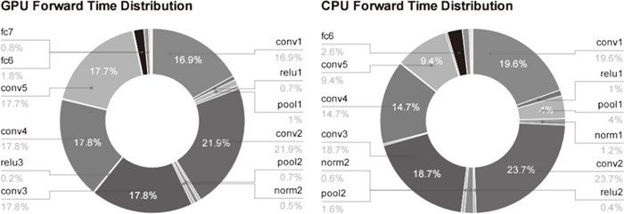
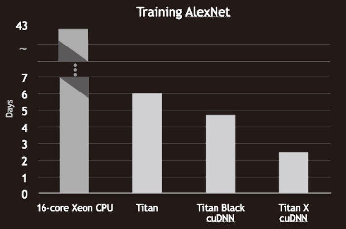
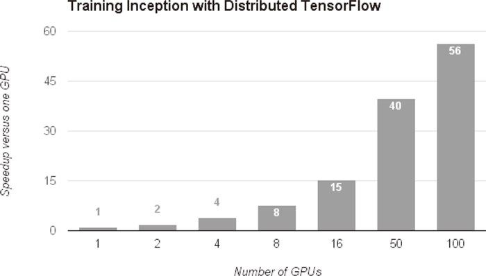

正如 7.2 节介绍的那样，卷积层中进行的运算可以追溯至乘积累加运算。因此，深度学习的高速化的主要课题就变成了如何高速、高效地进行大量的乘积累加运算。
正如 7.2 节介绍的那样，卷积层中进行的运算可以追溯至乘积累加运算。因此，深度学习的高速化的主要课题就变成了如何高速、高效地进行大量的乘积累加运算。
随着大数据和网络的大规模化，深度学习需要进行大量的运算。虽然到目前为止，我们都是使用 CPU 进行计算的，但现实是只用 CPU 来应对深度学习无法令人放心。实际上，环视一下周围，大多数深度学习的框架都支持 GPU（Graphics Processing Unit），可以高速地处理大量的运算。另外，最近的框架也开始支持多个 GPU 或多台机器上的分布式学习。本节我们将焦点放在深度学习的计算的高速化上，然后逐步展开。深度学习的实现在 8.1 节就结束了，本节要讨论的高速化（支持 GPU 等）并不进行实现。
在介绍深度学习的高速化之前，我们先来看一下深度学习中什么样的处理比较耗时。图 8-14 中以 AlexNet 的 forward 处理为对象，用饼图展示了各层所耗费的时间。
从图中可知，AlexNex 中，大多数时间都被耗费在卷积层上。实际上，卷积层的处理时间加起来占 GPU 整体的 95%，占 CPU 整体的 89% ！因此，如何高速、高效地进行卷积层中的运算是深度学习的一大课题。虽然图 8-14 是推理时的结果，不过学习时也一样，卷积层中会耗费大量时间。

图 8-14 AlexNet 的 forward 处理中各层的时间比：左边是使用 GPU 的情况，右边是使用 CPU 的情况。图中的“conv”对应卷积层，“pool”对应池化层，“fc”对应全连接层，“norm”对应正规化层（引用自文献 [26]）
GPU 原本是作为图像专用的显卡使用的，但最近不仅用于图像处理，也用于通用的数值计算。由于 GPU 可以高速地进行并行数值计算，因此 GPU 计算的目标就是将这种压倒性的计算能力用于各种用途。所谓 GPU 计算，是指基于 GPU 进行通用的数值计算的操作。
深度学习中需要进行大量的乘积累加运算（或者大型矩阵的乘积运算）。这种大量的并行运算正是 GPU 所擅长的（反过来说，CPU 比较擅长连续的、复杂的计算）。因此，与使用单个 CPU 相比，使用 GPU 进行深度学习的运算可以达到惊人的高速化。下面我们就来看一下基于 GPU 可以实现多大程度的高速化。图 8-15 是基于 CPU 和 GPU 进行 AlexNet 的学习时分别所需的时间。
从图中可知，使用 CPU 要花 40 天以上的时间，而使用 GPU 则可以将时间缩短至 6 天。此外，还可以看出，通过使用 cuDNN 这个最优化的库，可以进一步实现高速化。
GPU 主要由 NVIDIA 和 AMD 两家公司提供。虽然两家的 GPU 都可以用于通用的数值计算，但与深度学习比较“亲近”的是 NVIDIA 的 GPU。实际上，大多数深度学习框架只受益于 NVIDIA 的 GPU。这是因为深度学习的框架中使用了 NVIDIA 提供的 CUDA 这个面向 GPU 计算的综合开发环境。图 8-15 中出现的 cuDNN 是在 CUDA 上运行的库，它里面实现了为深度学习最优化过的函数等。

图 8-15 使用 CPU 的“16-core Xeon CPU”和 GPU 的“Titan 系列”进行 AlexNet 的学习时分别所需的时间（引用自文献 [27]）
im2col可以将卷积层进行的运算转换为大型矩阵的乘积。这个im2col方式的实现对 GPU 来说是非常方便的实现方式。这是因为，相比按小规模的单位进行计算，GPU 更擅长计算大规模的汇总好的数据。也就是说，通过基于im2col以大型矩阵的乘积的方式汇总计算，更容易发挥出 GPU 的能力。
虽然通过 GPU 可以实现深度学习运算的高速化，但即便如此，当网络较深时，学习还是需要几天到几周的时间。并且，前面也说过，深度学习伴随着很多试错。为了创建良好的网络，需要反复进行各种尝试，这样一来就必然会产生尽可能地缩短一次学习所需的时间的要求。于是，将深度学习的学习过程扩展开来的想法（也就是分布式学习）就变得重要起来。
为了进一步提高深度学习所需的计算的速度，可以考虑在多个 GPU 或者多台机器上进行分布式计算。现在的深度学习框架中，出现了好几个支持多 GPU 或者多机器的分布式学习的框架。其中，Google 的 TensorFlow、微软的 CNTK（Computational Network Toolki）在开发过程中高度重视分布式学习。以大型数据中心的低延迟·高吞吐网络作为支撑，基于这些框架的分布式学习呈现出惊人的效果。
基于分布式学习，可以达到何种程度的高速化呢？图 8-16 中显示了基于 TensorFlow 的分布式学习的效果。

图 8-16 基于 TensorFlow 的分布式学习的效果：横轴是 GPU 的个数，纵轴是与单个 GPU 相比时的高速化率（引用自文献 [28]）
如图 8-16 所示，随着 GPU 个数的增加，学习速度也在提高。实际上，与使用 1 个 GPU 时相比，使用 100 个 GPU（设置在多台机器上，共 100 个）似乎可以实现 56 倍的高速化！这意味着之前花费 7 天的学习只要 3 个小时就能完成，充分说明了分布式学习惊人的效果。
关于分布式学习，“如何进行分布式计算”是一个非常难的课题。它包含了机器间的通信、数据的同步等多个无法轻易解决的问题。可以将这些难题都交给 TensorFlow 等优秀的框架。这里，我们不讨论分布式学习的细节。关于分布式学习的技术性内容，请参考 TensorFlow 的技术论文（白皮书）等。
在深度学习的高速化中，除了计算量之外，内存容量、总线带宽等也有可能成为瓶颈。关于内存容量，需要考虑将大量的权重参数或中间数据放在内存中。关于总线带宽，当流经 GPU（或者 CPU）总线的数据超过某个限制时，就会成为瓶颈。考虑到这些情况，我们希望尽可能减少流经网络的数据的位数。
计算机中为了表示实数，主要使用 64 位或者 32 位的浮点数。通过使用较多的位来表示数字，虽然数值计算时的误差造成的影响变小了，但计算的处理成本、内存使用量却相应地增加了，还给总线带宽带来了负荷。
关于数值精度（用几位数据表示数值），我们已经知道深度学习并不那么需要数值精度的位数。这是神经网络的一个重要性质。这个性质是基于神经网络的健壮性而产生的。这里所说的健壮性是指，比如，即便输入图像附有一些小的噪声，输出结果也仍然保持不变。可以认为，正是因为有了这个健壮性，流经网络的数据即便有所“劣化”，对输出结果的影响也较小。
计算机中表示小数时，有 32 位的单精度浮点数和 64 位的双精度浮点数等格式。根据以往的实验结果，在深度学习中，即便是 16 位的半精度浮点数（half float），也可以顺利地进行学习 [30]。实际上，NVIDIA 的下一代 GPU 框架 Pascal 也支持半精度浮点数的运算，由此可以认为今后半精度浮点数将被作为标准使用。
以往的深度学习的实现中并没有注意数值的精度，不过 Python 中一般使用 64 位的浮点数。NumPy 中提供了 16 位的半精度浮点数类型（不过，只有 16 位类型的存储，运算本身不用 16 位进行），即便使用 NumPy 的半精度浮点数，识别精度也不会下降。相关的论证也很简单，有兴趣的读者请参考 ch08/half_float_network.py。
关于深度学习的位数缩减，到目前为止已有若干研究。最近有人提出了用 1 位来表示权重和中间数据的 Binarized Neural Networks 方法 [31]。为了实现深度学习的高速化，位数缩减是今后必须关注的一个课题，特别是在面向嵌入式应用程序中使用深度学习时，位数缩减非常重要。